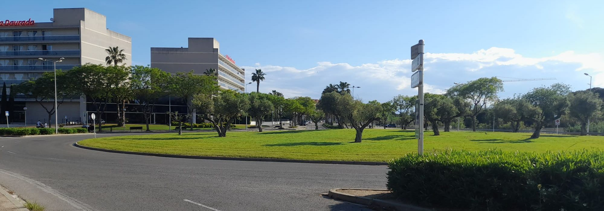
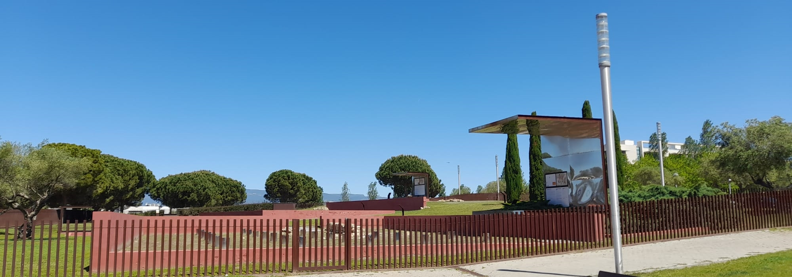

Les zones verdes són espais de gran importància per a la comunitat de Salou, ja que ofereixen múltiples beneficis per a la salut i el benestar dels seus habitants. Així doncs, aquestes zones proporcionen un espai verd i natural per a la gent per gaudir de l'aire lliure i connectar amb la natura. Això és especialment rellevant en una ciutat costanera com Salou, on el turisme i la vida urbana poden ser molt frenètics. A més, les zones verdes són llocs on la gent pot reunir-se per fer exercici, jugar, fer pícnic o simplement passar temps amb els amics i la família.

En aquest apartat es destaca la importància de les zones verdes a Salou per a la sostenibilitat i el benestar ciutadà, citant diversos estudis que subratllen aquesta importància. S'enumeren les mesures de protecció implementades, com el Pla d'Ordenació Urbanística Municipal, el Pla Especial de Protecció dels Espais Litorals, el Pla d'Ordenació dels Recursos Naturals, i el la de Gestió Forestal, així com campanyes de sensibilització i accions de seguiment i control. Es ressalta la necessitat de la col·laboració ciutadana i s'apunta a una nova campanya de sensibilització en procés. Es subratlla la responsabilitat compartida entre les autoritats i la comunitat en la preservació dels espais verds.
Els espais verds són un element fonamental de les ciutats, ja que ofereixen nombrosos beneficis tant per a la població com per al territori. Com tot, no tots els espais verds poden aportar els mateixos beneficis, i és que alguns poden aportar més vitalitat que d’altres. Entenem el terme de grau de vitalitat com la capacitat que té un espai verd per a poder mantenir-se en un bon estat i per tant, generar els beneficis que s’esperen d’aquest.